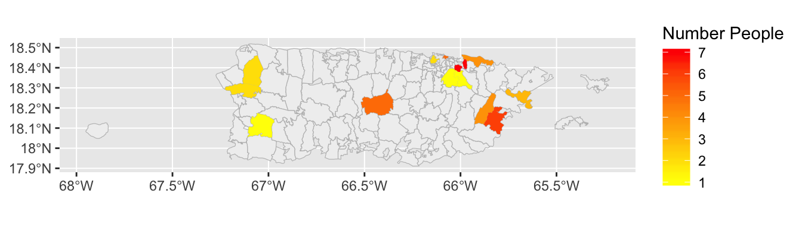
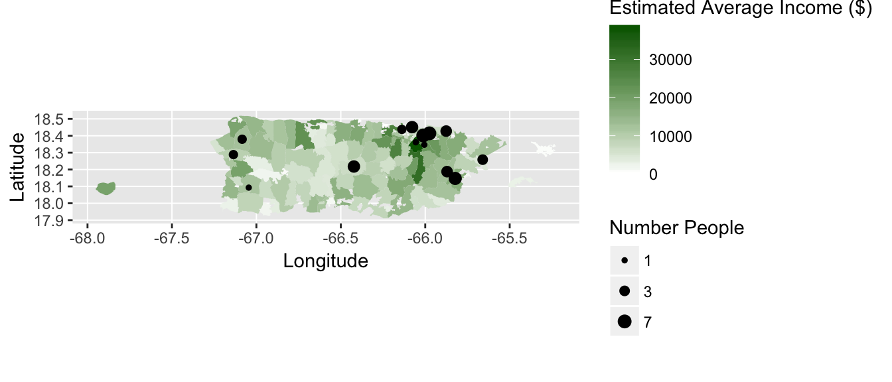

Visualizing Puerto Rican Homelessness in Western New York
Sara Peterson
Introduction
Homeless individuals are among the most marginalized populations of society. Homeless populations are further marginalized in data collection and representation. Even efforts specifically intended to record homeless data can inadvertently further marginalize certain groups of homeless individuals; entries with zip codes that were viewed as “incomplete” were taken out of an official 2015 data set used by the Homelessness Alliance of Western New York. This led to migrants from particular places being omitted from data analysis and official reports. Those individuals ignored in official reports includes 46 individuals who moved from Puerto Rico before becoming homeless in Erie County. This project seeks to understand and represent where people are coming from before becoming homeless in Western New York, using R to map the origins of these individuals and visually represents migration as movement along great circle lines. It specifically explores the phenomenon of individuals moving from Puerto Rico before becoming homeless in Western New York.
Materials and methods
Load Packages
Load any required packages in a code chunk (you may need to install some packages):
library(zipcode)
library(readr)
library(raster)
library(dplyr)
library(tidyverse)
library(tidycensus)
library(maps)
library(ggmap)
library(USAboundaries)
library(noncensus)
library(tigris)
library(sf)
library(geosphere)
library(RColorBrewer)
knitr::opts_chunk$set(cache=TRUE) # cache the results for quick compilingLoad Buffalo Data Set
Read in the anonymized data set provided by the Western New York Homeless Alliance (due to the sensitive nature of this file, it is stored locally on my own computer and will not be able to be downloaded). This data set provides anonymized records of each person who checked into homeless shelters in Erie County in 2015. Each time a person visited a shelter, they were given a fake ID and fake household ID. Their age, gender, and household type (e.g. “single parent,” “single adult,” “two parent household”) were recorded, as was their last zip code of residence, the month that they checked into the shelter, and the length of their stay. This data set has a record of all this information, but there are instances where the records are incomplete.
Buffalo_Shelter_Data <-read_csv("~/Desktop/Adam's Class/*final project/Buffalo Shelter Data 1.csv")Use the zipcode package to create a new vector (“Zip”) by cleaning the zipcodes in the “Zip” column of the Buffalo Shelter Data CSV. The clean.zipcodes function fixes the entries with “incomplete” zip codes that were thrown out of the data set so that they are useable and creates a new vector out of the cleaned zip codes. The recently-created Zip code vector will then be rejoined to the Buffalo Shelter Data dataframe to have the cleaned zip codes (rather than the incomplete ones) in the Buffalo Shelter Data dataframe.
Zip<-clean.zipcodes(Buffalo_Shelter_Data$Zip)
Buffalo_Shelter_Data$Zip <- Zip
#View(Buffalo_Shelter_Data)Zip Code Data Frames
Use the zipcode package to create two data frames: one with the zipcodes for all of the United States, and other with zipcodes just for Puerto Rico. Rename the column heads so that they can later be more easily joined to the Buffalo Shelter Data to create points marking the origin of individuals who become homeless in Buffalo
#download the zip code data for the whole of the United States
data("zipcode")
#rename the head
names<-c("Zip","City","State","Latitude","Longitude")
colnames(zipcode, do.NULL = TRUE, prefix = "col")
colnames(zipcode)<-names
#rename
USdataframe=zipcode
##USdataframe is the data frame with zip codes for all of the United States. You can filter to only have Puerto Rico
PRdataframe<-filter(zipcode,State=="PR")
##PRdata frame is the data frame with zip codes for just Puerto Rico
head(PRdataframe)Zip Code Boundaries
Use the tigris package to download the physical boundaries for all zip codes in Puerto Rico and convert to sf. This will be used later to create choropleth maps of Puerto Rico. Note: this process could be done for the whole of the United States simply by leaving the ‘state=“PR”’ section out of the code, but the focus of the project is the migration specifically from Puerto Rico and we will not be creating a choropleth map of the whole of the United States
#run the following line of code only once to download the boundary data -- it may take awhile
options(tigris_use_cache = TRUE)
PRzips<-zctas(cb = FALSE, starts_with = NULL, year = 2010, state = "PR")%>%
st_as_sf()
##PRzips is the sf object with the physical boundaries for PR zip codesGeocoding Buffalo Shelter Data
Join the Buffalo Shelter Data and the USdataframe by zip code, then use the sp package to assign coordinates using “Longitude” and “Latitude”. You can now plot the general location of where across the United States homeless people were coming from based on the centroid coordinates of their zip code origin. Note: multiple people originating from the same zip code would be visualized as a single point
BufDataLL_US<-inner_join(Buffalo_Shelter_Data, USdataframe, by= "Zip")
coordinates(BufDataLL_US)<-c("Longitude","Latitude")
#plot(BufDataLL_US)Complete the same process with the PRdata frame: Join the Buffalo Shelter Data and the PRdataframe by zip code, then use the sp package to assign coordinates using “Longitude” and “Latitude”. You can now plot the general location of where within Puerto Rico homeless people were coming from based on the centroid coordinates of their zip code origin.
BufDataLL<-inner_join(Buffalo_Shelter_Data, PRdataframe, by= "Zip")
coordinates(BufDataLL)<-c("Longitude","Latitude")
#Plot(BufDataLL)Summarizing the total counts from each zip code
Summarizing from origin in all of the United States
Summarize the data by the count of individuals coming from each of the different zip codes in the United States. You will create centroid points of the zip codes that now have an “n” value of the number of people coming from each given zip code.
US origins represented as centroid points
#Join the Buffalo Shelter Data to the US zip code data
count_in_zips_US<-inner_join(Buffalo_Shelter_Data, USdataframe, by= "Zip")%>%group_by(Zip)%>%summarise(n=n())
#join the newly created data frame with the number of individuals coming from each zip code back to the to the USdataframe to get the coodinates of the zip codes
count_in_zips_points_US<-left_join(count_in_zips_US,USdataframe,by= "Zip")
#set the coordinates for the centroid points
coordinates(count_in_zips_points_US)<-c("Longitude","Latitude")
#convert to sf
st_as_sf(count_in_zips_points_US)
#plot(count_in_zips_points_US)Summarizing from origin only in Puerto Rico
Summarize the data by the count of individuals coming from each of the different zip codes in Puerto Rico. You will create both centroid points and polygons with counts of individuals coming from each zip code for the Puerto Rico data.
Puerto Rico data represented as centroid points
#Join the Buffalo Shelter Data to the Puerto Rico zip code data
count_in_zips<-inner_join(Buffalo_Shelter_Data, PRzips, by= c("Zip" = "ZCTA5CE10"))%>%group_by(Zip)%>%summarise(n=n())
#create count_in_zips_points, which is a left join of the count_in_zips data frame that you just created and the PRdataframe that has the locations of the zip codes
count_in_zips_points<-left_join(count_in_zips,PRdataframe,by= "Zip")
#set the coordinates
coordinates(count_in_zips_points)<-c("Longitude","Latitude")
st_as_sf(count_in_zips_points)
#plot(count_in_zips_points)Puerto Rico data represented as polygons
Create count_in_zips_polygons, which is the Puerto Rico zip code polygons joined with the Buffalo shelter data of people coming from each zip code in Puerto Rico, then summarized to give the total count originating from each zip code.
count_in_zips_polygons<-inner_join(Buffalo_Shelter_Data, PRzips, by= c("Zip" = "ZCTA5CE10"))%>%st_as_sf()%>%group_by(Zip)%>%summarise(n=n())
#plot(count_in_zips_polygons)Income For Puerto Rico Zip Codes
Since homelessness is often related to income levels, we are interested in the average income in each zip code of origin in Puerto Rico. Use the tidycensus package to get the household income data from the US Census Bureau (census.gov). We will download the income data for each zip code (table B19001_001E is the average household income in the past 12 months)
IncomeZipCodeData <-get_acs(geography = "zcta", variables = "B19001_001E")Join IncomeZipCodeData with PRzips to make PR zips income file
PRzipsIncome<-left_join(IncomeZipCodeData, PRzips, by= c("GEOID" = "ZCTA5CE10"))Results
Mapping Migrant Origin by Zip Code
The following map shows the locations across the United States that people originate from before becoming homeless in Western New York
#set the points of origin ("points_in_US") and the final destination in Buffalo ("BuffaloCoordinates")
points_in_US<- data.frame(count_in_zips_points_US)
BuffaloCoordinates=as.matrix(geocode("Buffalo, NY"))
#use the map package to create a map of the area of interest
xlim <- c(-160, -55.5)
ylim <- c(12, 50)
map("world", col="#f1f1f1", fill=TRUE, bg="white", lwd=0.2, xlim=xlim, ylim=ylim)
#use geosphere package to create great circle lines between points of origin and Buffalo, NY
for (j in 1:length(points_in_US$n)) {
inter <- gcIntermediate(c(points_in_US[j,]$Longitude, points_in_US[j,]$Latitude), BuffaloCoordinates, n=100, addStartEnd=TRUE)
lines(inter, col="black", lwd=0.6)
}As we can see, there are a number of lines originating in Puerto Rico. The next section will specifically explore the phenomenon of people coming from Puerto Rico before becoming homeless in Western New York…
Puerto Rico to Buffalo
Let’s focus on the migration from Puerto Rico to Buffalo. We can zoom in on the map of migration to Buffalo from Puerto Rico along great circle lines, and color code the lines by the number of people coming from each place (the darker red the color, the more people coming from the zip code)
#set the points of origin ("points") and the final destination in Buffalo ("BuffaloCoordinates")
points <- data.frame(count_in_zips_points)
BuffaloCoordinates=as.matrix(geocode("Buffalo, NY"))
#use the map package to create a map of the area of interest
xlim <- c(-90, -60)
ylim <- c(18, 45)
map("world", col="#f1f1f1", fill=TRUE, bg="white", lwd=0.2, xlim=xlim, ylim=ylim)
#create a color ramp to show the number of people coming from each zip code of origin
prettypal<-colorRampPalette(c("#ffeda0", "red"))
prettycolors <- prettypal(max(points$n))
#use geosphere package to create great circle lines between points of origin and Buffalo, NY
for (j in 1:length(points$n)) {
inter <- gcIntermediate(c(points[j,]$Longitude, points[j,]$Latitude), BuffaloCoordinates, n=100, addStartEnd=TRUE)
colindex <- (points[j,]$n)
lines(inter, col=prettycolors[colindex], lwd=0.8)
}
Zip Code Density
It is difficult to see where on the island of Puerto Rico people are coming from. Let’s create a choropleth map of density (number of people coming to Buffalo from each Puerto Rican zip code) to make it evident where on the island more people are coming from
###use ggplot to create a choropleth map of density
ggplot(PRzips)+
geom_sf(lwd=0.2,fill="#f0f0f0", col="#bdbdbd")+
geom_sf(data=count_in_zips_polygons, aes(fill = n), col="transparent") +
scale_fill_gradient(low = "yellow", high = "red")+
labs(fill="Number People")
Map of Mean Income By Zip Code
Homelessness is often associated with a region’s overall income levels. To get a sense of economic variation within Puerto Rico, we will use average income data set that we downloaded to map the average mean income in Puerto Rico by zip code.
ggplot(PRzipsIncome)+
geom_sf(data=PRzipsIncome, aes(fill = estimate), col="transparent") +
scale_fill_gradient(low = "white", high = "dark green")+
labs(fill="Estimated Average Income ($)")
From this map of income, we can see that there is a great deal of variation in average income by zip code on the island of Puerto Rico. We can now overlay this map with the number of people coming from each zip code. The number of people coming from each zip code will be represented as proportional symbols, with larger dots indicating more people originating from a given zip code.
ggplot(PRzipsIncome)+
geom_sf(data=PRzipsIncome, aes(fill = estimate),col="transparent") +
scale_fill_gradient(low = "white", high = "dark green")+
labs(fill="Estimated Average Income ($)")+
geom_point(data=points, aes(x=Longitude, y=Latitude, size=n),col="black")+
scale_size(limits = NULL, range = c(1, 3), breaks=c(1,3,7), trans = "identity", guide = "legend")+
labs(size="Number People")
Conclusions
Looking at the final map, which overlays the number of individuals from Puerto Rican zip codes with the average household income of the zip code, I was surprised to see that there does not seem to be a strong relationship between income and the number of individuals orginating from that zip code. It is certainly worth noting that the data is not normalized and there could be many, many explanations for this apparently lack of relationship: for example, the zip codes with lower average incomes may have relatively small populations compared to wealthier zip codes, so it may be possible that people are simply coming from more populous regions. It also may be possible that people in relatively poorer zip codes may not have the resources at their disposal to make their way to Buffalo, as travel is expensive. These are just potential explanations, but they are worth considering. It is also important to note that all of these speculations are drawn merely from visual analysis, as the total sample size of people coming from Puerto Rico was too small to run any kind of meaningful statistical regression.
On a broader scale, this project has successfully shown where people are coming from before becoming homeless in Western New York. My experience in developing this project has also demonstrated how easy it might be to use R to visualize migration data and the origins of homeless individuals. My ultimate hope is to compare this current data set with similar data sets from other Rust Belt cities, including Cleveland, OH, and Pittsburgh, PA to see if the phenomenon of homeless individuals originating in Puerto Rico extends beyond Buffalo and the Western New York region. This project will be an invaluable tool, as the code for this project could easily be run with other data sets substituted for the Buffalo Shelter Data.
References
The homelessness data set used in this project was generously provided by The Homelessness Alliance of Western New York
The zip code polygons and the zip code income data were downloaded from the US Census Bureau (census.gov)
- U.S. Census Bureau (2016). US Cartography Boundary Shapefiles - ZIP code tabulation areas (ZCTAs). Retrieved from https://www.census.gov/geo/maps-data/data/cbf/cbf_zcta.html
- U.S. Census Bureau (2015). Household Income In The Past 12 Monts (in 2015 Inflation-Adjusted Dollars), 2015 American Community Survey 1-year estimate. Retrieved from https://factfinder.census.gov/faces/tableservices/jsf/pages/productview.xhtml?src=bkmk